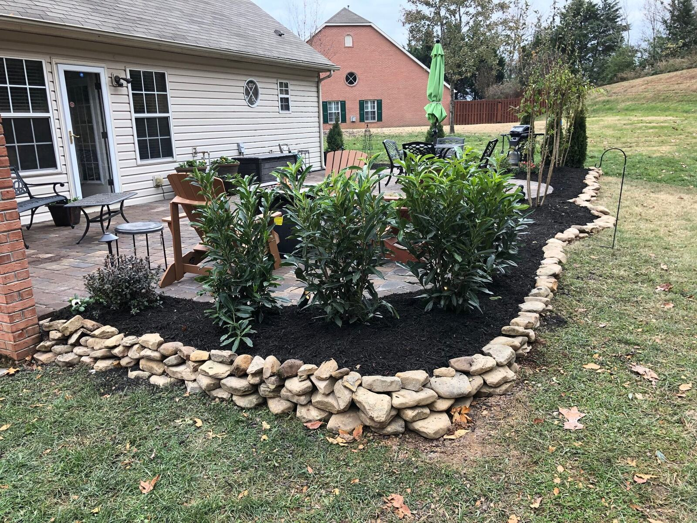

If your Knoxville yard is an empty canvas waiting for a creative masterpiece, then landscaping services are the paint and brushes that bring it to life. You can implement all kinds of features to make your yard more varied and unique than other properties on the block.
But should you go with traditional landscape designs or integrate hardscaping services instead? As a top-rated outdoor contractor in Knoxville, Tennessee, The Yard Force differentiates between the two below. Learn where landscapes and hardscapes diverge.
What Does Landscaping Entail?
When discussing landscape services, you’re talking about your general yard improvement ideas. Landscape designs encompass all elements you install to make your outdoor spaces more attractive and functional, including:
- Water features like ponds, fountains, or streams
- Drainage technology to keep rainwater from pooling in one area
- Retaining walls, patios, and firepits
- Softscapes like flowerbeds, vegetable gardens, trees, and shrubs
If landscape services encompass softscape installation, where do hardscapes come in? Are they similar to softscapes?
What About Hardscaping Services?
Softscapes specifically refer to living or organic elements, such as plants, mulch, and lawns. But how do residential hardscaping solutions compare with landscaping services? In short, hardscapes are part of a larger landscape design and might include:
- Your garden and patio layout
- Outdoor seating areas
- Firepits
- Rock walls
- Dry creek beds
- Cement decks or walkways
Anything that involves rock or pavement materials would probably count as a hardscape.
What’s the Difference Between Hardscaping and Landscaping?
The question of hardscaping vs. landscape design is a more nuanced one. A comprehensive landscape service will involve everything from softscapes to utility features and decorative hardscapes. All hardscaping services fall under the landscape umbrella, but not all landscape features are hardscapes.
Let’s examine these categories further:
- Softscapes include living, growing plant life or organic matter like pine straw or wood chips used for mulch.
- Hardscapes are paved areas and rock formations installed to make your property more attractive or functional.
- Both softscapes and hardscapes can qualify as utility features if they serve a purpose that makes your yard more functional.
- Decorative features typically don’t have a particular use beyond making your yard more attractive.
How Do You Apply Different Landscape Features to Your Property?
How might you work hardscapes into your landscape design? First, let’s explore different types of hardscapes and their landscaping purposes below:
- Firepits: These structures help you stay warm outdoors while safely containing the fire and fuel.
- Infrastructural surfaces: Walkways, driveways, and carports are the most basic hardscape utility features.
- Rock walls: You can build a retaining wall made from large stones to complement and protect flower beds and other softscape features.
- Seating: Pagodas, gazebos, and stand-alone benches provide places to sit among the larger landscape.
- Fences: Your landscape team can construct fences from treated wood, rocks, aluminum, and other materials for privacy or to protect your pets.
- Play equipment: You might not think of playgrounds as landscapes, but they count! Plus, their use of plastic, metal, and other non-living materials places them squarely in the hardscape category.
- Social spaces: Seating and shelter go hand in hand to create comfortable areas for socializing outdoors.
- Statues: Most statues, small fountains, and other ornamental items don’t serve a utilitarian purpose. They simply enhance the decorative and visual appeal of your landscaping.
- Drains: Most drainage systems are strictly utilitarian by nature. They prevent erosion and water stagnation, although dry creek beds look aesthetically pleasing.
Choosing the hardscape features that best suit your needs and tastes requires extensive outdoor living space planning. You must consider how you intend to use your yard and the challenges brought by local weather.
How Should You Choose Your Features?
So, which landscaping elements and features should you pick for a rich, comfortable outdoor experience? The Yard Force’s crew has a few suggestions to help you get a strong start for your design inspiration:
- How will you use your outdoor area? Perhaps you want to host neighbors and friends for cold beverages each weekend. You need a comfortable, shady seating area at a minimum.
- What problems does your property have? Note where rainwater pools and whether you can easily navigate from one place to another. Stairs, pathways, and drainage systems create a safer, more accessible yard.
- Which design features would you like to integrate? If you have a short list of must-haves, consider where they’ll work best. Features like fountains, birdhouses, and your small collection of granite fairy statues aren’t necessities but add charm to softscapes.
- How might the weather impact your outdoor lifestyle? Knoxville, Tennessee, experiences rainy, humid, and warm seasons, as well as damp, cool seasons. Shelter from these elements, along with fire pits for winter warmth, is essential.
Create the Ultimate Landscape Design With The Yard Force’s Services in Knoxville, Tennessee
The Yard Force takes all the guesswork out of your landscaping visions in Knoxville, Tennessee. Request an estimate online or call us at 865-290-8815 to discuss your project.